july 22, 2026
i have nothing to say.
ok fine: pouty face, smooshed peach on sidewalk, picture of a moth from 10 years ago, japchae, freckled shoulder, dog earred borrowed book, dog earred dog, bowling, spilt slushy, falling asleep, being alone, being together, being silent together, feeling anxious, cleaning room, leaving pants on floor again. ok thats all.
i miss u come back 2 me.... dont leave..... not yet. just stick around for awhile.... in all serious tho should i be doing something else with my life? it all feels so unserious. but i am serious about it!!! i want to change. it is frusterating cause it feels like every single other fiber of my being does not want to change. its like i am this one dog thats trying to herd all the sheep into the next field and the sheep dont respect the dog at all adn are like 'whatever man'.
july 17, 2026
i rlly need to stop looking at movie ratings before i watch the movie. i used to think that my opinion is not important because the reality of this world is made up of the opinions of others. like the tree falling in the woods thing. what does my intention matter when others' perception is all that makes me real?? does that make sense..? anyways now i have a little bit of a better understanding of what matters. but still i cling onto what the general public think. like movie ratings. i write off movies that have 3.8/5 stars on letterboxd. which is so stupid. because juno has 3.7/5 and thats the best movie ever.
found these photos that somehow got lost into the expanses of my camera roll.. i think they are from the summer and fall of 2023 (first year):

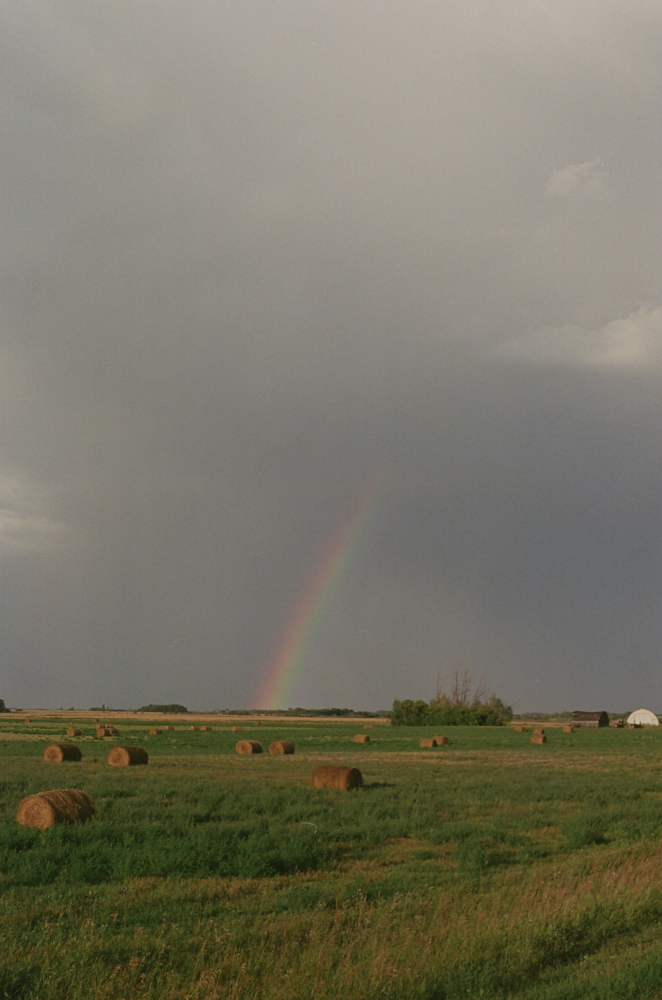

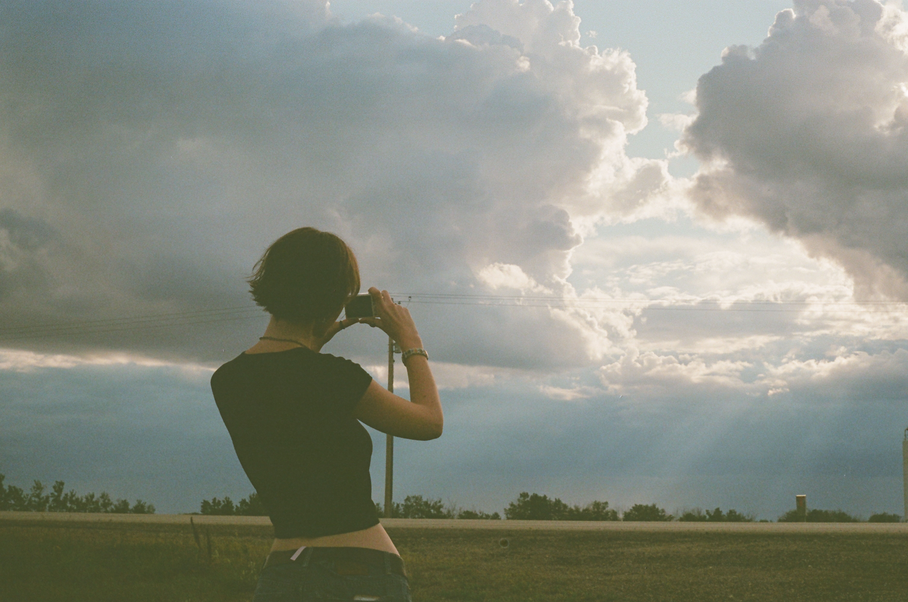
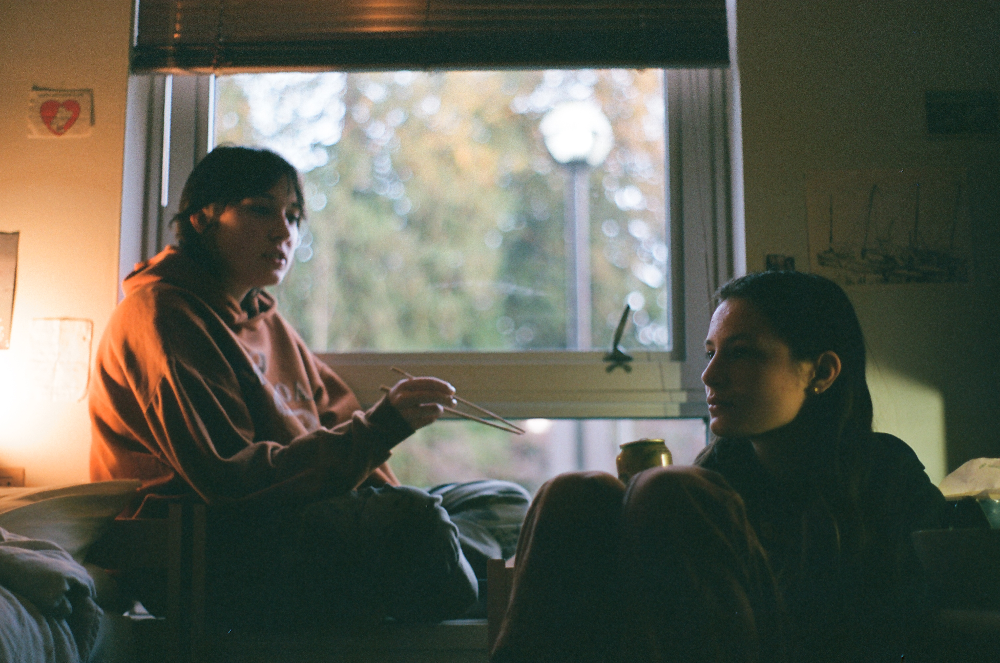


i have been having the ultimate overarching powerful feeling that everyone hates me and doesnt want me around. but i dont think it is true. but i do. but i dont. but i do. everything is in my head........... like everything.... like this whole damn world...! but its also not. the birds outside my window dont worry if i like them. they dont give a shit about me.......
do u know if u press ur palms onto the ground u can hold the whole world in ur hands?

july 10, 2026
oh hey there... i dedicate this entry to the sip of coffee in the morning. or maybe just credit it to that.. two tall girls are in the same cafe as me. i think i need to grow up and accept my height. because they were both so beautiful and i think if i could accept my height i could be like them. ok enough about that tho... here's something i wrote awhile ago:
"i am feeling a little better which makes me feel a lot better. which makes me not want to trip on the sidewalk and hit my head on the concrete. i know or am coming to know the cruel beauty of this world. but i woke up today feeling a little better and that is enough. breath, like words, will continue across the page. they do not need to carry the weight of a masterpiece, do not need to be extraordinary. they just need to be, like me! so much weight i have found upon me and it is my very own. sit up, stand up and feel the lightness of your feet, of your laugh."
i am realizing that most of the time i write it is prospectively. i read somewhere that fiona apple does the same thing, that her songs are a peptalk to herself. but i think there is so much truth in the advice we give to ourselves. it is the wise part of us. my therapist says that everyone has a wise self within us. we may choose whether or not to listen to her but she is always there. i think writing is the only way i can access her. so many times i have sat down to write anxious and spiralling to find the girl reflecting in the page nurturing and understanding. but she is me!
anyways.... here is a photo of me (in case u forgot what i look like):
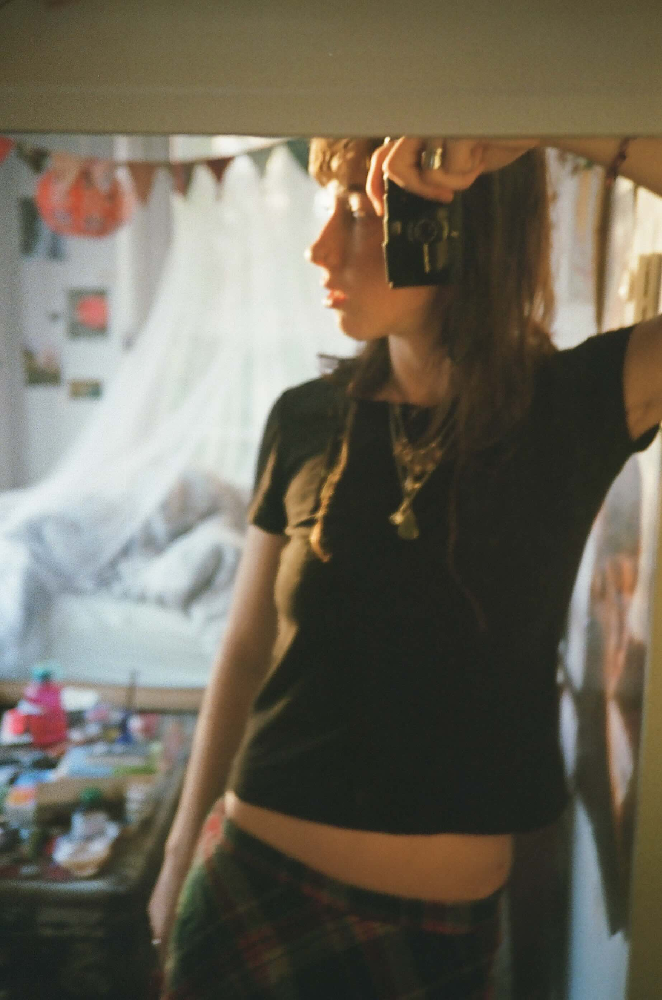
july 5, 2026
a girl in a room. it smells like vanilla burning. a vanilla extract factory is burning. or maybe just the vanilla incense i am burning. or the vanilla body butter i got on. today i went to squamish to climb with gaia. it was fun! we went to this weird bar after to get burgers and beers and watch the norway vs england fifa game (cool). norway won which is now my fav team. i feel connected to them because i think my grandma is norwegian. she used to make us lefse which is potato flatbread that u put butter and sugar on. we would eat it at thanksgiving. it is so freaking good omg i havent had it in forever too. she also used to pickle sweet pickles and make chokecherry and crab apple jelly. i liked the crab apple the best. she doesn't make anything anymore because she lives in a home now. i miss her old house. i miss grandpa too. i miss arizona. wow i am making myself kind of sad right now.... she sends me cards for bday and christmas with checks in them.

june 26, 2026
I wanna rock with you! yeah you know that one? mister micheal jackson himself. Yall ever seen him save the world in that music video "we are the world"? no mister micheal jackson... YOU are the world. I dont think hes a pedophile either.. dont cancel me!!!
ok that was rowan if u couldnt tell... hi guys.. oops i mean star people. im at rowans house rn. jumping up and down. or maybe im spinning around. u wouldnt know because u cant see me! but i'll be honest with u, i have one knee up and sitting on the other leg at the diningroom table. my left foot is falling asleep. it is raining outside. i am drinking some lukewarm coffee. trying to live in the infinite eternity of the present moment, u know? maybe for a couple minutes or even seconds today u should try to breathe and live in the little sliver of NOW. because nothing is forever except for the present. but anyways..... i wanna rock with u!!!
june 24, 2026
i have stopped listening to the way things grow. something is changing, subtly i am growing feathers. i am so scared to leave but it does feel like a necessary return to myself. because i find i am only true when truly alone. and to see how much you have grown, you have to rip up the roots that stabilize you. i am to be repotted.
june 22, 2026
a very ordinary temple of a human.
i have been listening to nts radio, specifically the breakfast show w/ flo. she is so cool. i watched an interview with her and laurie anderson (here) and she talked about how she misses old internet specifically old blogs. i thought that was cool. here's her website (honestly i think mine might be cooler but dont tell flo i said that).

june 19, 2026
to be ordinary. i love being ordinary. sometimes i find myself getting caught up with the idea of being extraordinary and it can be harmful. like how i sometimes want to be the coolest girl in the room. its all bullshit. i have been trying to wear clothes that make me happy. i hate aesthetics and categorizing yourself into a box. such an internet thing. sometimes i wish i could blow up the internet. anyways i like being ordinary. ordinary aesthetic ahhahahahha. haha. i used to think if i had a daughter i would name her jane. such an ordinary but beautiful name. something humble about being a jane.
my cup is completely full. it is rare. it feels as if i am fully realized. some days i feel semi transluscent. like a half ghost looking for a way to be brought into the physical world. but today i am solid. today feels different. i am sick unfortunatly but i went to a walk in clinic cause i had nothing else to do and also i am paranoid i am dying all the time. the doctor said i was fine. probably thought i was one of those people that google self diagnoses themselves with various illness. maybe i am.
here's some photos from my coolpix:
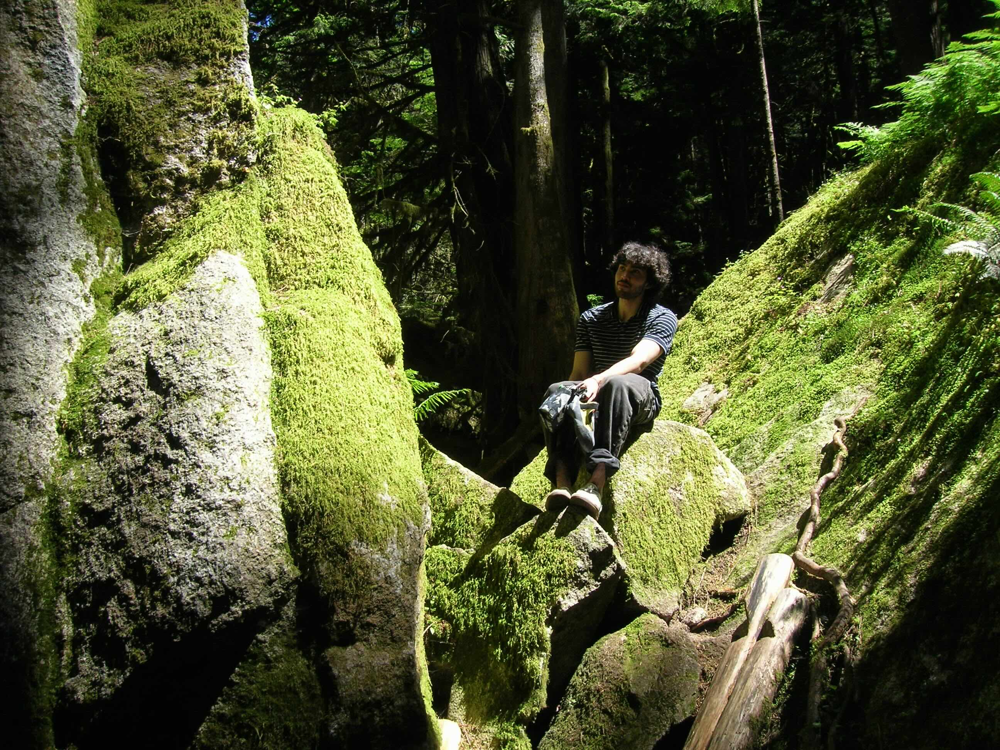
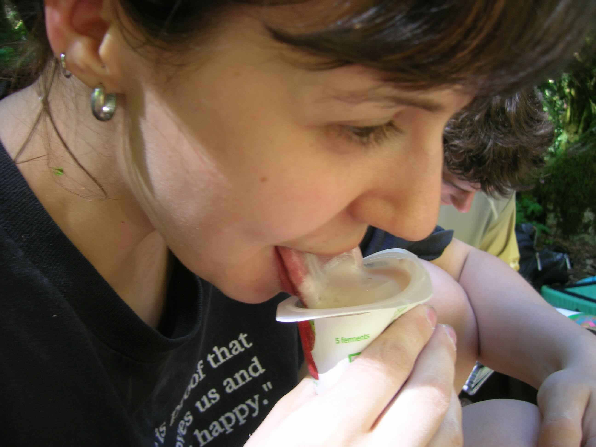
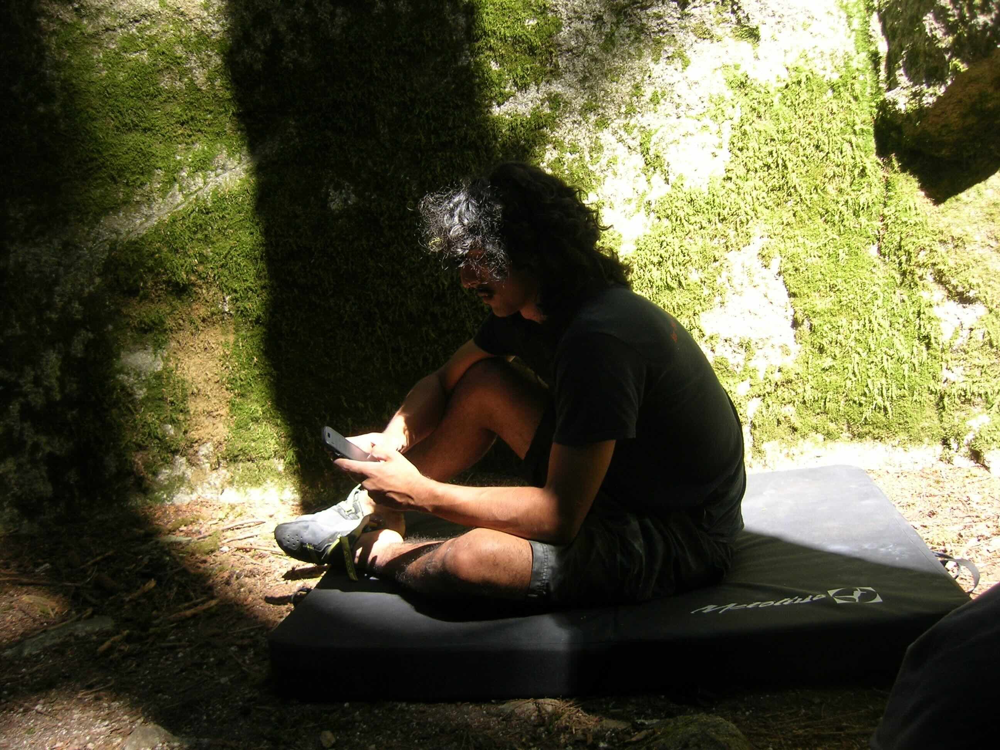
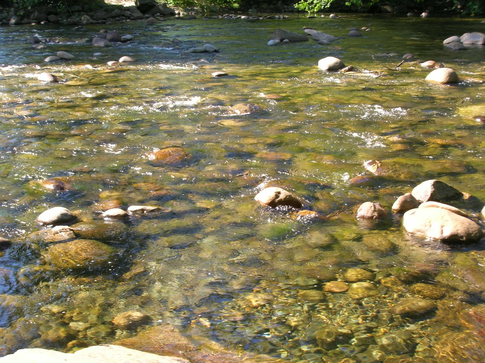
i also got some bloodwork done and im officially anemic! hooray! i bought some iron supplements and am excited to be ironful ^w^
june 18, 2026
i watched this mexican movie today. so many dead dogs. but i didnt cry. i am trying to be ok with giving vulnerable things. even to people im scared of. because it doesnt matter. i decided that today. to let go.
may 27, 2026
my eyes hurt from computer.. and tv.. and phone.... when will i learn
may 11, 2026
did a whole reformat of this blog goddaamamnn...
april 21, 2026
ok so this is what i think: there is this whole thing and we are doing it u know? but we are all just reflecting the same reality through our seemingly seperate consciousnesses. like a mirror broken into a billion million pieces reflecting back the same object just from different perspectives. it is impossible to accept my own fragment as true, but it is all i see. it gives me so much comfort how important and unimportant i am. everything has so little and so much meaning. but it always leaves the question of what do i do?? i guess i should just be, soak in all the other little fragments and maybe we can start to understand a little bit more of the whole. i am not sure.. when i look at the flowers i see myself smiling back at me. there is so much to learn from plants. but i guess also in saying that i am admitting difference and superiority. i guess i could say we have a lot to learn from each other. i find i put nature on this pedestal of a greater understanding that i will never be able to achieve - but we are nature too! i do think that humans have strayed from the wholeness somehow, maybe through too much intelligence and iphones and strawberry matcha latte and lime scooters. u know? it does feel like we pulled up to the party with the wrong attitude and outfit on. like chill bro just be cool u dont have to b doing all that. what do u think star person? its okay if u dont agree and maybe think it is a little hippie dippie. comment down below ur thoughts! (lol do u get it cause u cant comment cause i dont know how to code a comment section so this is a one-way conversation from me to the void of space where there may or may not be someone on their laptop reading this and being like omgeee im a star person)
7:35pm: bro. oh my god. i am the luckiest girl in the world. so i go to study with my friends from my algae class at the general vpl (the goat i know) and we are all having a good ol time talking about how different phytoplankton store their energy. u know like chrysolaminaran, paramylon grains, starch, lipids etc. and kayla (my bff in the class) is like oh farren i have something for u. and im like whattttttt do u mean. and BOOM she pulls out a portrait she painted of sargassum muticum. SARGASSUM MUTICUM!!!! MY FAVOURITE FREAKING ALGAE!!!!!!!! i could have broke down crying but also i am insanely horrible at receiving gifts so i didn't. here is the painting:
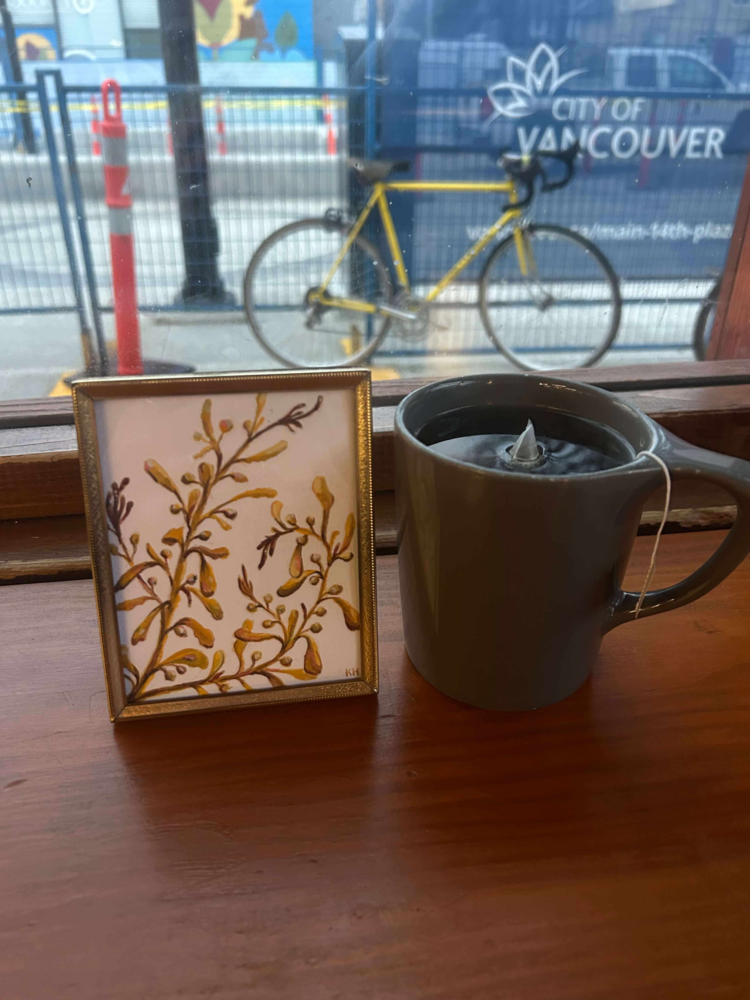
i am so happy i could scream. but i dont because i am at jjbean. but anyways do u know about sargassum muticum? it is in class phaeophyceae (brown algae) but it is NOT a kelp. i think it is in order fucules? let me check... ok yes it is. it has a gametic lifecycle (like us!) so that means the free-living stage is diploid! there is also something called the sargasso sea which is a spot in the atlantic ocean that the currents are just right and its literally all sargassum. my dream!
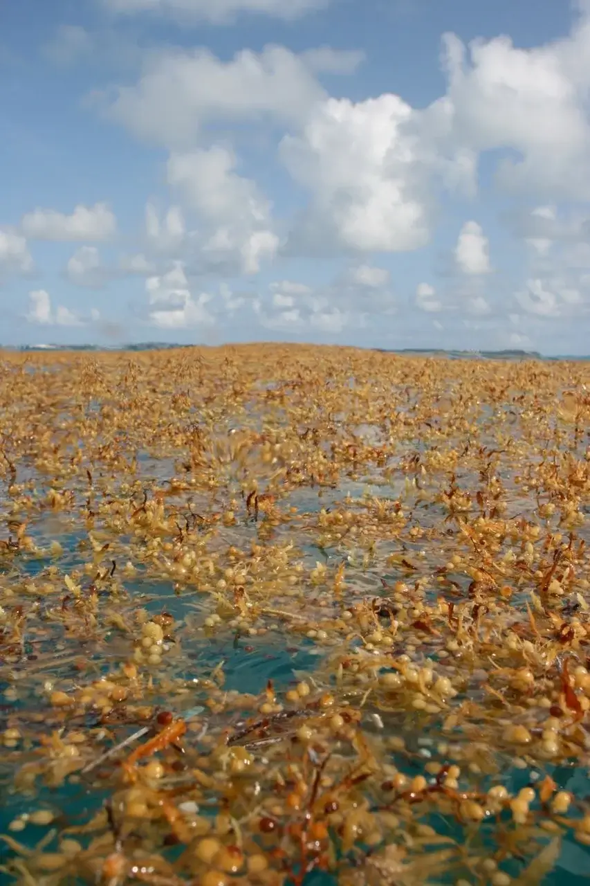
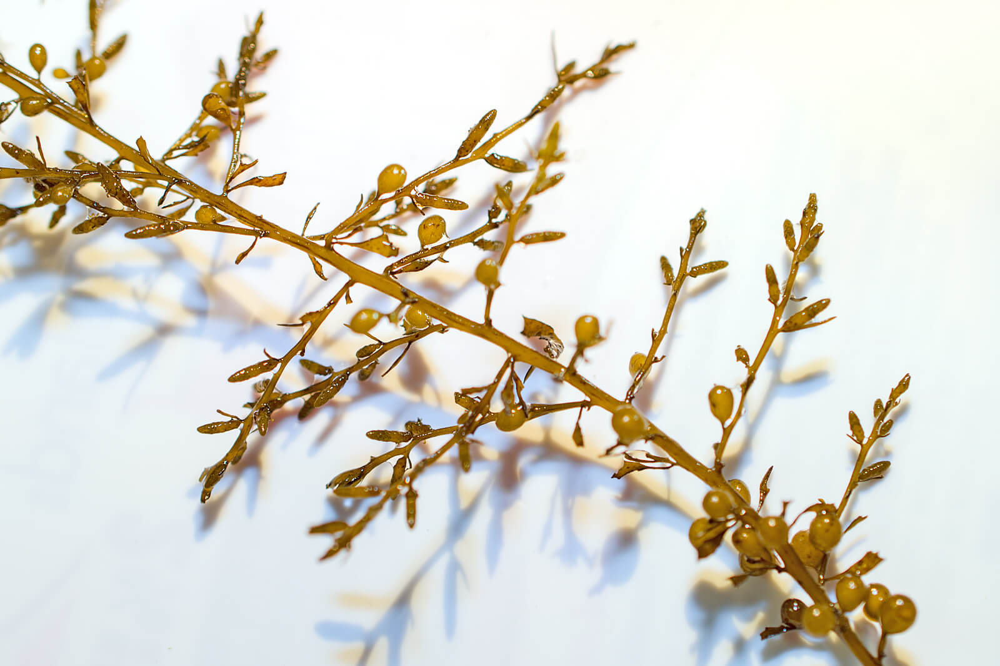
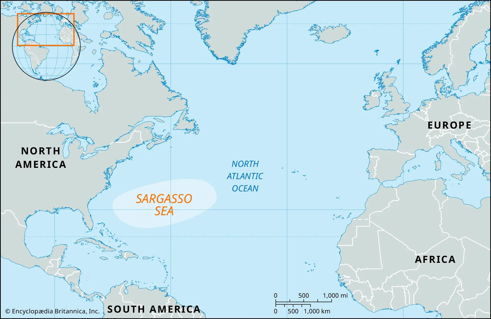
april 19, 2026
i think i have crush on the trees and the little spring flowers that smell so sweet. i am turning into something that i never knew i could be. i couldnt stop smiling when i was walking to the library. i want to make the world happy. not in a people pleasing way i just want to share this feeling with everyone. i am genuinely in one of the best mindsets i have ever been in. i feel like a child.
april 18, 2026
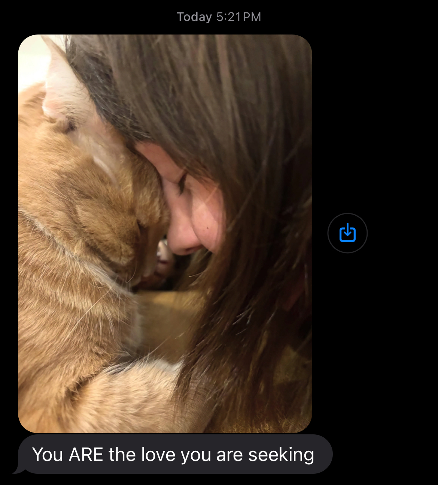
april 14, 2026
meow meow meooeweowo.... one final down.... 3 to go!!!! but actually just one to go... kind of.... i am so scared for this one........ the other two are gonna b a walk in the park. today i spent the day with gaia my awesome roommate. oh boy do we have a jolly ol time together! sometimes i get this weird perspective of listening in on our conversation as a stranger. every time i do i think wow they are such good friends.
april 13, 2026
omg star people i am so scared. so scared that i literally cannot do anything else but be scared. which is kinda bad because i rlly do need to study rn... i just want it all to be over i dont want to do this anymore. school is so annoying. but maybe thats because i dont rlly like my degree. like i would be happy to study for french or bio rn but i need to study for my freaking computer science finals??? the ones that i am majoring in??? no way... i thikn i need to rethink my whole career path because i rlly dont enjoy learning this bs.
april 11, 2026
hello star people.... coming to u from brassneck with my bff ROWAN!!!!! we are drinkning beer and i have my laptop out which is crazyyyy.... Rowan comin in here, yeah.. that rowan. hope yall are havin gfun up in space... cuz youre star people. yknow. did you guys see the woman whos in space rn. shes cool she wears braids in her space ship. thats relatable because im a girl too and i also like to wear my hair in braids. i think if i went to space i would probably wear braids. yeah.. hair probably gets real tangled in zero gravity.
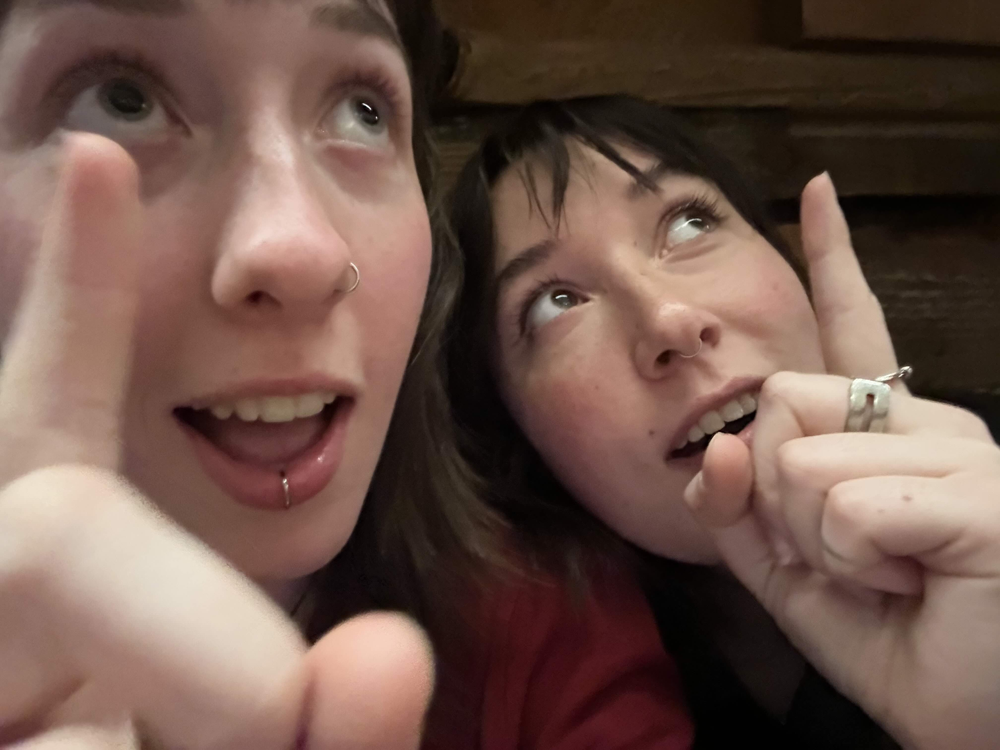
we are looking up at u..... can u see us???????
april 10, 2026
update!! i presented it and everyone liked it!! (i think) here's the link if u wanna play it.
april 9, 2026
hey star.... people.... are u sick of me calling u that?????? ok so i kinda sorta made a game for my algae bio class (biol 320 if ur interested..) and its not all shiny and pretty but i am presenting it tmr and im a little nervous.
april 8, 2026
oh.... it is beginning that time again. it feels like the whole world is going to crash down on me. and it's just exam season. but also it's exam season!!!!!! so scary ahhhhh sends shivers down my spine.
april 7, 2026
happy april sunshine star person! the sun is reflecting in everyone's faces in the most beautiful way. i am dizzy from my bike ride here.
april 1, 2026
white rabbits! star folk! happy white rabbits! do you know how to hold your own hand? do it, right now. you know how to hold it. it should be that simple right? but i know it's not. palm to palm is prayer. so holding your own is prayer. change, especially a death change, always opens up my mind to new ways to pray. not prayer in the kneeling, god way. but also not entirely not that either. we are all trying, who am i to judge someone's prayer? who am i to judge? everything is lovable if i am skin to skin with it. not in a sexual sense but also kinda too. complete intimacy with a being will teach you so much. examining the forest floor is no different than the sidewalk. but anyways... prayer. prayer? do you pray? i don't know if i do. but at the same time every breath i breathe is a prayer. so we are all in a constant state of prayer. it's fine if you disagree, it all just depends on what you think prayer is. but i think prayer is trying to understand, trying to love? im not sure. if i knew exactly what prayer is i think i would not have so many problems. but today i will pray and tomorrow i will too.
march 31, 2026
hey star person. have you ever had a dream so sweet you wish you didn't remember it? i don't know what to do. i never do. im so tired of my thoughts. im so tired. i just want some stability but every time i lean a little too much on something it goes away. i had a 5 hour nap at 2pm today and it's making me feel queasy. everything makes me queasy. when i remember some memories i physically gag. if i could puke them out i would. something is dying within me. i really am trying to keep it alive but i think i just need to let it go. mercy for myself is to let it die. but i am so self-sabotaging and cant. maybe when i am laying in the may sun i will be able to heal. ok sorry this is a weird sad entry do not read into any of this. i promise im fine. kinda sorta fine.
here are some photos from stanley park - isn't nature so beautiful? the thing is that we are all a part of it too. i had a moment of understanding when i was amongst the trees and their leaves. we are all really just little cells from the same organism. to love someone is to love all. to love someone is to love yourself. ok i should really go study now.
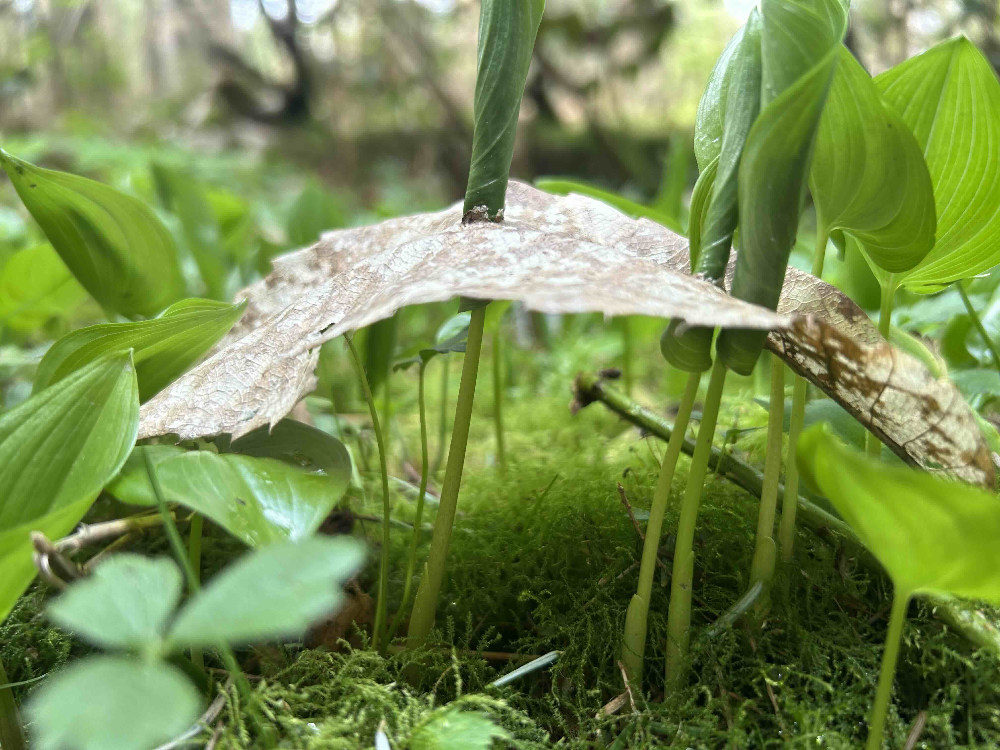
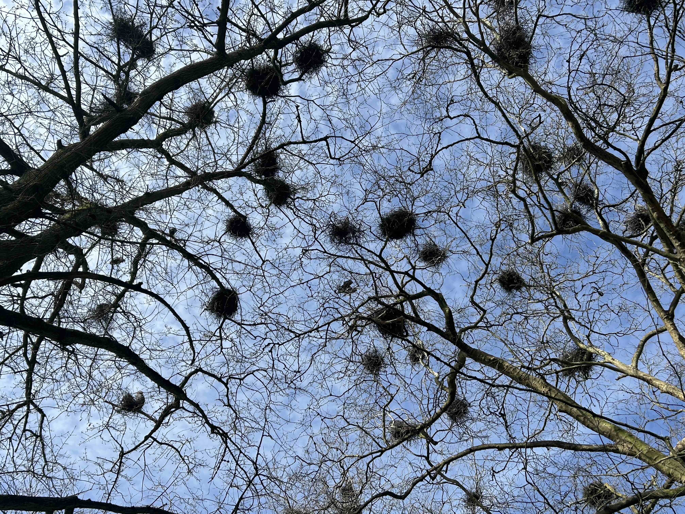
i have been so deeply in love with fiona apple. somehting clicked in my brain and i understand her now.